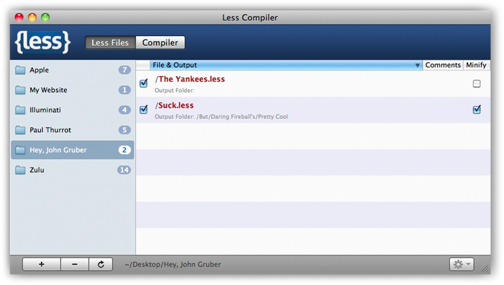

{% include JB/setup %}
{% raw %}
<div>
<div class="book" title="How Do I Use Less?"><div class="book"><div class="book"><div class="book"><h1 class="title1"><a id="I_sect1_d1e15954" class="calibre1"></a>How Do I Use Less?</h1></div></div></div><p class="calibre3"><a id="I_indexterm_d1e15958" class="calibre1"></a><a id="I_indexterm_d1e15963" class="calibre1"></a>There are various methods for compiling Less code into
    CSS.</p><div class="book" title="Via the Command Line"><div class="book"><div class="book"><div class="book"><h2 class="title3"><a id="id2947806" class="calibre12"></a>Via the Command Line</h2></div></div></div><p class="calibre3">Install the Less gem, and then call the <code class="literal">lessc</code>
      command:</p><pre class="screen">gem install less
lessc style.less</pre></div><div class="book" title="Via Rack"><div class="book"><div class="book"><div class="book"><h2 class="title3"><a id="id2947823" class="calibre12"></a>Via Rack</h2></div></div></div><p class="calibre3"><a id="I_indexterm_d1e15982" class="calibre1"></a>If you’re using a Rack-based framework like Rails 3,
      there’s an even simpler solution: the rack-less gem. Just include the
      relevant gem in your <em class="calibre4">Gemfile</em>:</p><pre class="screen">gem "rack-less"</pre><p class="calibre3">And inject the middleware in
      <em class="calibre4">application.rb</em>:</p><pre class="screen">require "rack/less"
config.middleware.use "Rack::Less"</pre><p class="calibre3">Any Less stylesheets under <em class="calibre4">/app/stylesheets</em>
      will be compiled automatically. You can even cache and compress the
      result by configuring rack-less in your
      <em class="calibre4">production.rb</em> <span class="calibre1">config</span> file:</p><pre class="screen">Rack::Less.configure do |config|
  config.cache     = true
  config.compress  = :yui
end</pre></div><div class="book" title="Via JavaScript"><div class="book"><div class="book"><div class="book"><h2 class="title3"><a id="id2947899" class="calibre12"></a>Via JavaScript</h2></div></div></div><p class="calibre3"><a id="I_indexterm_d1e16015" class="calibre1"></a>Development seems to have slowed on the Ruby libraries,
      but luckily there’s a more up-to-date option: <a class="ulink" href="http://github.com/cloudhead/less.js">Less.js</a> is Less
      written in JavaScript. You can specify Less stylesheets in the page and
      include the <em class="calibre4">less.js</em> JavaScript file, which compiles
      them automatically:</p><pre class="screen">&lt;link rel="stylesheet/less" href="main.less" type="text/css"&gt;
&lt;script src="less.js" type="text/javascript"&gt;&lt;/script&gt;</pre><p class="calibre3">Less.js is 40 times faster than the Ruby version of the library.
      However, you may want to precompile the Less stylesheets so clients
      don’t take the performance hit. If you have Node.js<a id="I_indexterm_d1e16031" class="calibre1"></a> installed, you can compile it via the command
      line:</p><pre class="screen">node bin/lessc style.less</pre></div><div class="book" title="Less.app"><div class="book"><div class="book"><div class="book"><h2 class="title3"><a id="id2947961" class="calibre12"></a>Less.app</h2></div></div></div><p class="calibre3"><a class="ulink" href="http://incident57.com/less">This Mac OS X
      application</a> <a id="I_indexterm_d1e16044" class="calibre1"></a>makes it even easier to use <span class="calibre1">Less. It</span> uses Less.js behind the scenes,
      and you can specify certain folders to be <span class="calibre1">“watched”—</span>i.e., the Less stylesheets will
      be automatically compiled into CSS when you save them. See <a class="ulink" href="apbs06.html#fig_b_1" title="Figure B-1. Compiling Less files automatically with Less.app">Figure B-1</a>.<a id="I_indexterm_d1e16056" class="calibre1"></a><a id="I_indexterm_d1e16058" class="calibre1"></a></p><div class="figure"><a id="fig_b_1" class="calibre1"></a><div class="book"><div class="book"><a id="I_mediaobject_d1e16062" class="calibre1"></a></div></div><p class="title4">Figure B-1. Compiling Less files automatically with Less.app</p></div></div></div></div>

{% endraw %}

